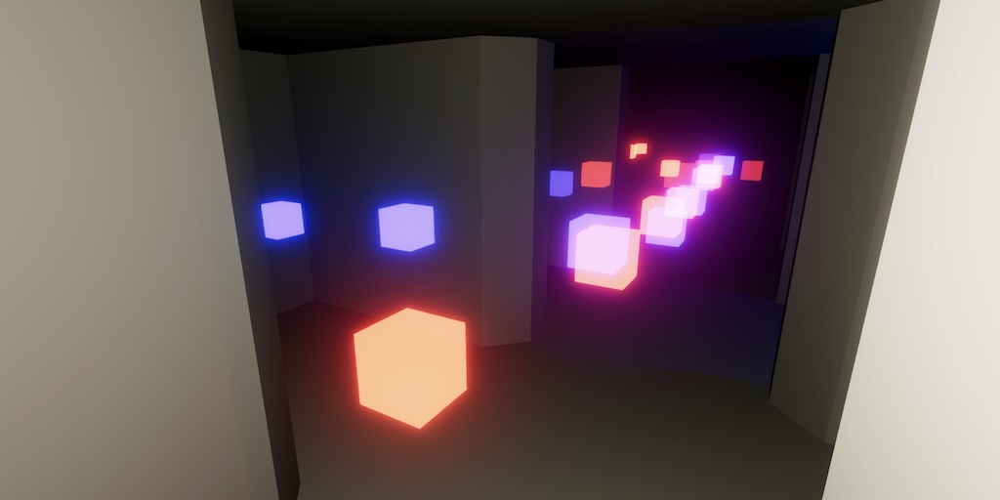
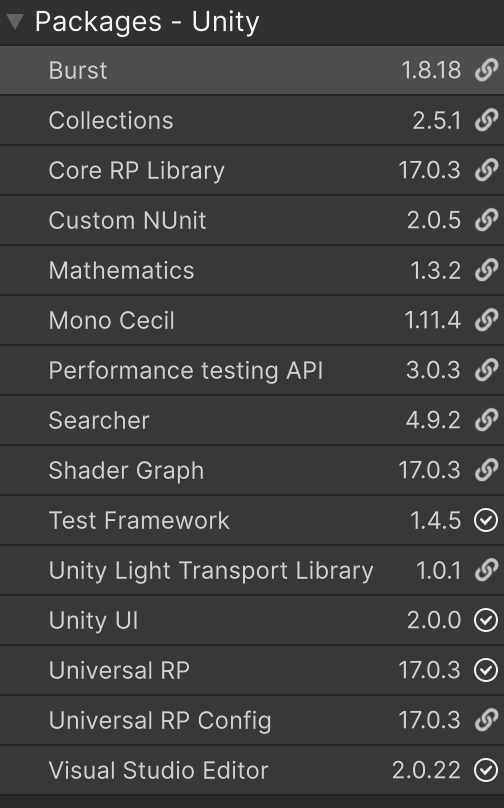
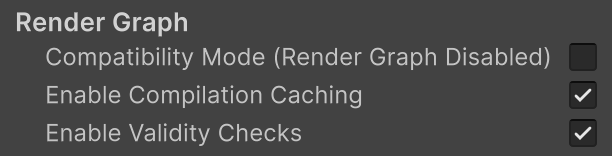
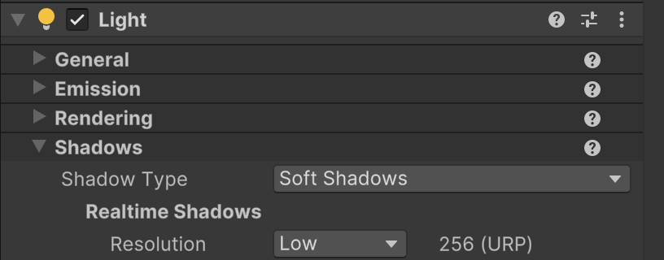
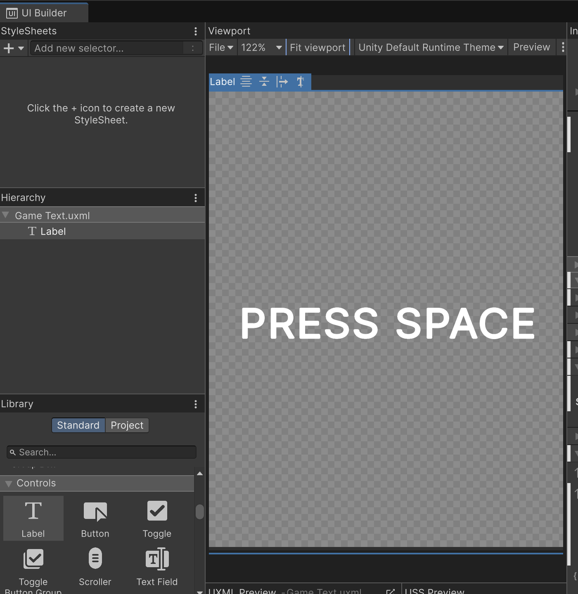
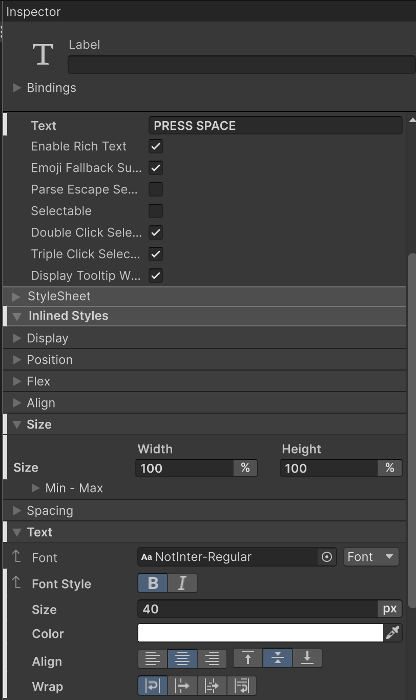
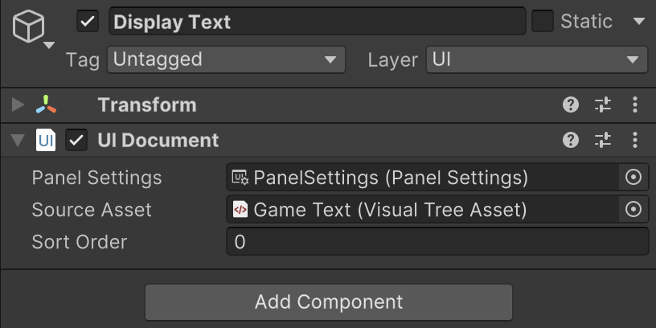
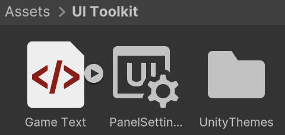
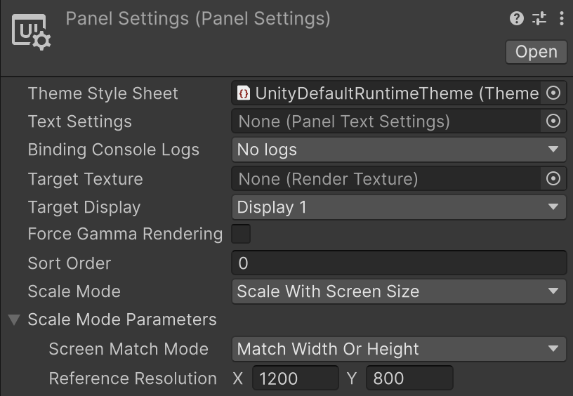

Maze 4.0.0
UI Toolkit

This tutorial is made with Unity 6000.0.34f1 and follows Maze 3.0.0.
Upgrading to Unity 6
This time we upgrade our Maze project to Unity 6, which warrants another major version increase. We also take this opportunity to start using UI Toolkit, replacing TextMesh Pro.
Open the project in Unity 6 and let it upgrade. If asked to upgrade TextMesh Pro assets, do so, even though we will no longer we using them later on.
After upgrading our packages have been upgraded to newer versions, most notably URP.

URP Changes
URP changed a lot, though we mostly don't need tot worry about it in this project. However, one thing that is important is to turn off its compatibility mode, which gets enabled by default when upgrading a project to Unity 6. URP now uses the Render Graph API, but this is what gets disabled by default. To turn it on, go to the Graphics project settings, switch to the URP tab, and then go to the Render Graph section at the bottom. Disable the Compatibility Mode (Render Graph Disabled) toggle so the render graph is used and URP functions as intended.

When playing the game we'll likely get warnings related to shadows, complaining that our point lights don't fit in the shadow atlas. Go to the Light component of our Agent prefab. Under Shadows / Realtime Shadows set Resolution to Low. That should stop the warnings.

The game text is also likely way too bright now. This happens because we configured an HDR color for the text, but the new TextMesh Pro materials no longer support HDR color properties. Trying to change the font material's color would reveal that we are now limited to LDR colors. We can ignore this because we're switching to UI Toolkit next.
UI Toolkit
The UI Toolkit is Unity's latest GUI framework. Initially it was only available for editor UIs but can now also be used for in-game UI overlays. Putting UIs in 3D space is not supported—at least not yet—but we don't need that for Maze.
UI Document Asset
UI Toolkit documents somewhat mimic web pages, with each page stored in a UIDocument asset, which has the uxml extension. Create such a document via Assets / Create / UI Toolkit / UI Document and name it Game Text.
UI document assets exits on their own and are not part of a scene. We could edit the UXML file directly or open the asset in the editor, which will load the document in the UI Builder window, which acts as a separate editor for UI documents.

To recreate our game text, drag a Label from the Controls section of the Library panel onto the Viewport area. To make it resemble the above screenshot we have to adjust a few of the label's settings.
The label's text should be set to Press Space. This can be done either directly in the viewport or by adjusting the Text property in its inspector panel, under the Attributes section.
We have to change a few more things to make the label appear as we want. All those settings are found under the Inlined Styles section. We could also define a global style for this, but we won't do that because our UI is very simple.
Go to the Size subsection and set both Width and Height 100, with unit types set to %, so it acts as a percentage. This will make the label fill the entire document.
Then go to the Text subsection and enable the bold Font Style, set Size 40 pixels, Color to white, Align to center and middle, and Wrap to normal. We enable wrapping in case the text ends up too long to fit on one line.

This gives us a document with large white text in its center, similar to our old TextMesh Pro label, though no longer with an yellowish HDR color. It will also no longer be affected by the bloom post FX, because it won't be part of the 3D scene.
UI Document Game Object
To show the UI document in the game we have to use an UI Document component. Add a game object with such an component to the scene, via GameObject / UI Toolkit / UI Document, naming it Display Text. We could also add the component directly to our Game object instead, but we keep it separate for clarity.
The component will have its Panel Settings property set to a default PanelSettings asset that has been created automatically. Select our Game Text asset for its Source Asset.

The PanelSettings asset has been put in a UI Toolkit asset folder, along with a UnityThemes asset that imports the default runtime style sheet. We can put our Game Text document in the UI Toolkit folder as well. Note that our document is shown to contain a style sub-asset, which represents the inline style changes that we make to our label.

Game Code
Our Game component controls when the display text is visible and what it says. We have to change the code so it works with the new UI Document instead of TextMesh Pro. First, instead of using the TMPro namespace we have to use UnityEngine.UIElements.
using TMPro;using Unity.Collections; using Unity.Jobs; using Unity.Mathematics; using UnityEngine; using UnityEngine.UIElements;
Second, change the type of the displayText field from TextMeshPro to UIDocument.
[SerializeField] UIDocument displayText;
Third, in the EndGame method we now have to use a different approach to set the text. We're working with a whole document instead of a single label. So we have to query the document for its label before we can set the label's text property.
To find the label we have to go to the root visual element of the document component, via its rootVisualElement property. Then we invoke the generic Q method on it, for the Label type. Because our document only contains a single label this suffices, we do not have to provide arguments to further narrow down the query.
//displayText.text = message;displayText.rootVisualElement.Q<Label>().text = message; displayText.gameObject.SetActive(true)
Finally, there is a peculiarity of UI documents that we have to be aware of. When adjusting the visual root element we're working with the document being displayed, not the asset. It's like the difference between what's being shown in a browser versus the webpage hosted by a webserver. The browser's visualization of the original document only exists while its page is opened. Likewise, when the document's game object is inactive or its component is disabled then the UI is considered to not exist in the scene. When it doesn't exist there isn't a root visual object either, so the rootVisualElement property will yield null. So we have to activate our display text before setting the text.
displayText.gameObject.SetActive(true); displayText.rootVisualElement.Q<Label>().text = message;//displayText.gameObject.SetActive(true);
Wrapping Up
At this point we have a functional maze game in Unity 6 with a new display text made with UI Toolkit. We should delete the old text child of Player so it no longer shows in the game view. We can also remove all TextMesh Pro assets. This might temporarily mess up our UI Document, which should be fixed after restarting Unity.
All messages are currently white. Let's give the trigger message of each agent a different color by adding a rich text color tag to it. For example, let's make the text of Agent Red light red by changing its Trigger Message to <color=#ff3333>RED CAUGHT YOU. Make sure that the label supports rich text, which is controlled via its Attributes / Enable Rich Text property.
Let's also use <color=#3333ff>BLUE CAUGHT YOU for Agent Blue and <color=#ffff00>YOU CAUGHT YELLOW for Agent Yellow.
Lastly, let's consider the size of the text. We set it to 40, which might be too large for small viewports. Let's make the size relative to a reference size, so that the document properly scales to fit different sizes. We do this by going to the PanelSettings asset, setting its Scale Mode to Scale With Screen Size. The default Scale Mode Parameters should be sufficient to ensure that our text always has a reasonable size.

The next tutorial is Cell Ornaments.